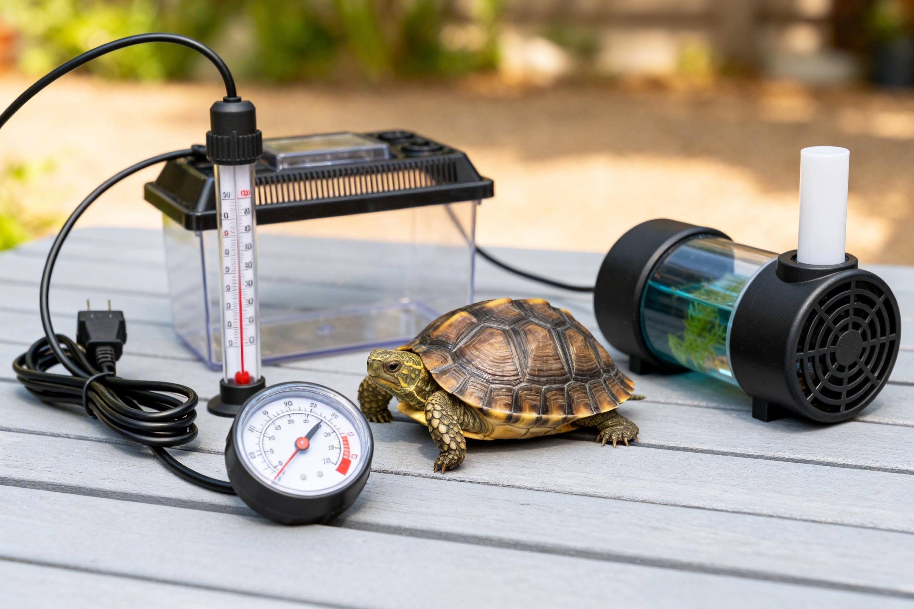

Best Pet Turtle for Beginners: Top 5 Species
Which turtle is easiest to keep long-term? Compare hardiness, size, and temperament.

Do Turtles Have Vocal Cords? 10 Surprising Facts
Shell nerves, cloacal breathing, and how turtles "speak" without a voice box.

Turtle Respiratory Infection: Symptoms & Treatment
Recognize early pneumonia signs and start the correct home treatment before it's too late.

Turtle Hibernation Guide: What, Why and How
Do all turtles hibernate? Learn the safe method for brumation, step by step.

Turtle & Tortoise Species Guides
Detailed profiles with care needs, adult size, lifespan, and suitability for beginners.

Daily Care & Feeding
Diet, UVB, temperature, handling, and everything a keeper needs day to day.

Health, Disease & Treatment
Vet-reviewed symptom checklists for respiratory, shell, eye, and metabolic issues.
Tank & Habitat Setup
Filters, lighting, basking platforms, and aquascaping for indoor and outdoor enclosures.
Vet-Reviewed Content
Health articles are reviewed by licensed exotic animal veterinarians.
Cited Sources
Every guide references herpetology journals, textbooks, or veterinary guidelines.
Regularly Updated
Articles are reviewed and updated as new research and best practices emerge.